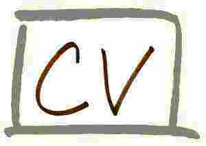

Dr. Nikolaos D. Tselikas received both his Dipl.-Ing. Degree and his PhD Degree from the School of Electrical and Computer Engineering of National
Technical University of Athens (NTUA) in 1999 and 2004, respectively. From 1999 to 2004 he was a research associate in the Intelligent Communications
and Broadband Networks (ICBNet) Laboratory of NTUA. From 2004 to 2008 he was a senior post-doctoral researcher in the same Laboratory in NTUA.
From 2006 to 2009 he was also a Visiting Lecturer, from 2009 to 2013 he was a Lecturer and from 2013 to 2018 he was an Assistant Professor
at the Department of Informatics and Telecommunications, University of Peloponnese (UoP), while he is currently serving as an Associate Professor at the same Department.
He has participated in several European and National research projects regarding network services and applications.
His research interests include the research areas of creation and provision of telecommunications services in fixed and mobile networks,
mobile applications, software and middleware technologies, open APIs, open source software licensing issues, web technologies etc.
He has collaborated in software design and development topics with big players in the telecom and informatics industry as well as
with national and international universities and academic institutions.
Dr. Nikolaos D. Tselikas has published more than 70 papers in the pre-mentioned areas in international Journals, Conferences, Books and Book Chapters and his work has received more than 500 (non-self) citations.
His book "C: From Theory to Practice" is proposed as the main textbook for C-programming course in about 50 Departments/Schools of Greek Universities and Technical Institutions.
Since 2014, the book has been translated in English and it is available by CRC Press,
while it is the proposed textbook in several Universities worldwide.
He is member of several Technical Committees in international conferences and a reviewer in numerous international journals. He is a member of the IEEE and a member of the Technical
Chamber of Greece.
Curriculum Vitae: 